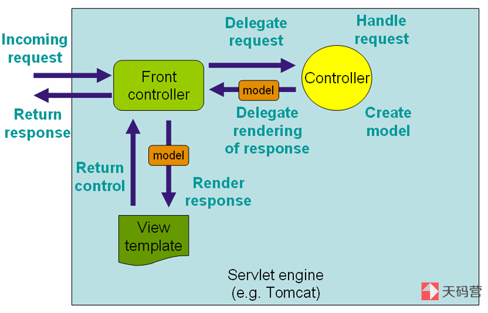
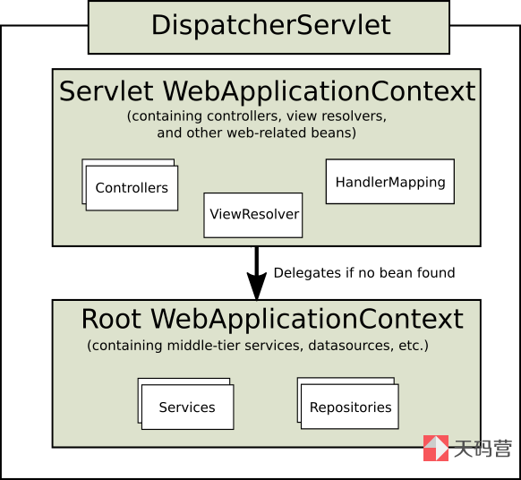

Spring MVC 框架是围绕 DispatcherServlet 来设计的，这个 Servlet 会把请求分发给各个处理器，并支持可配置的处理器映射、视图渲染、本地化、时区与主题渲染和文件上传等功能。
处理器是应用中注解了 @Controller 和 @RequestMapping 的类和方法，Spring 为处理器方法提供了非常多样灵活的配置。
Spring 3.0 以后提供了 @Controller 注解机制、@PathVariable 注解以及一些其他的特性，你可以使用它们来进行 RESTful web 站点和应用的开发。
Spring MVC 具有以下特性：
清晰的职责分离。每个角色——控制器，验证器，命令对象，表单对象，模型对象，DispatcherServlet，处理器映射，视图解析器，等等许多——的工作，都可以由相应的对象来完成。
强大、直观的框架和应用 bean 的配置。这种配置能力包括能够从不同的上下文中进行简单的引用，比如在 web 控制器中引用业务对象、验证器等。
强大的适配能力、非侵入性和灵活性。Spring MVC 支持你定义任意的控制器方法签名，在特定的场景下你还可以添加适合的注解（比如 @RequestParam、@RequestHeader、@PathVariable 等）
可复用的业务代码，使你远离重复代码。你可以使用已有的业务对象作为命令对象或表单对象，而不需让它们去继承一个框架提供的基类。
可定制的数据绑定和验证。类型不匹配仅被认为是应用级别的验证错误，错误值、本地化日期、数字绑定等会被保存。你不需要再在表单对象使用全 String 字段，然后再手动将它们转换成业务对象。
可定制的处理器映射和视图解析。处理器映射和视图解析策略从简单的基于URL配置，到精细专用的解析策略，Spring 全都支持。在这一点上，Spring 比一些依赖于特定技术的 web 框架要更加灵活。
灵活的模型传递。Spring 使用一个名称/值对的 Map 来做模型，这使得模型很容易集成、传递给任何类型的视图技术。
可定制的本地化信息、时区和主题解析。支持用/不用 Spring 标签库的 JSP 技术，支持 JSTL，支持无需额外配置的 Velocity 模板，等等。
一个简单但功能强大的JSP标签库，通常称为 Spring 标签库，它提供了诸如数据绑定、主题支持等一些特性的支持。这些定制的标签为标记（markup）你的代码提供了最大程度的灵活性。
一个 Spring 2.0 开始引入的 JSP 表单标签库。它让你在 JSP 页面中编写表单简单许多。
新增生命周期仅绑定到当前 HTTP 请求或 HTTP 会话的 Bean 类型。
Spring MVC 框架是请求驱动的：所有设计都围绕着一个中央 Servlet 来展开，它负责把所有请求分发到控制器；同时提供其他Web应用开发所需要的功能。DispatcherServlet 与 Spring IoC 容器做到了无缝集成，这意味着，Spring 提供的任何特性在 Spring MVC 中你都可以使用。
下图展示了 Spring Web MVC 的 DispatcherServlet 处理请求的工作流，DispatcherServlet 应用的其实就是一个“前端控制器”的设计模式：

基于 Spring Boot，可以直接使用 Spring MVC，除非有非常个性化的要求，相关配置不需要手动配置。
DispatcherServlet 其实就是个 Servlet（它继承自 HttpServlet 基类），同样也需要在你 Web 应用的 web.xml 配置文件下声明。你需要在 web.xml 文件中把你希望 DispatcherServlet 处理的请求映射到对应的 URL 上去。这就是标准的 Java EE Servlet 配置；下面的代码就展示了对 DispatcherServlet 和路径映射的声明：
1 2 3 4 5 6 7 8 9 10 11 12 | <web-app> <servlet> <servlet-name>example</servlet-name> <servlet-class>org.springframework.web.servlet.DispatcherServlet</servlet-class> <load-on-startup>1</load-on-startup> </servlet> <servlet-mapping> <servlet-name>example</servlet-name> <url-pattern>/example/*</url-pattern> </servlet-mapping></web-app> |
在上面的例子中，所有路径以 /example 开头的请求都会被名字为 example 的 DispatcherServlet 处理。
在 Servlet 3.0+ 的环境下，你还可以用编程的方式配置 Servlet 容器。下面是一段这种基于代码配置的例子，它与上面定义的 web.xml 配置文件是等效的。
1 2 3 4 5 6 7 8 9 | public class MyWebApplicationInitializer implements WebApplicationInitializer { @Override public void onStartup(ServletContext container) { ServletRegistration.Dynamic registration = container.addServlet("dispatcher", new DispatcherServlet()); registration.setLoadOnStartup(1); registration.addMapping("/example/*"); }} |
WebApplicationInitializer 是 Spring MVC 提供的一个接口，它会查找你所有基于代码的配置，并应用它们来初始化 Servlet 3 版本以上的 Web 容器。它有一个抽象的实现 AbstractDispatcherServletInitializer，用以简化 DispatcherServlet 的注册工作：你只需要指定其 Servlet 映射即可。
在 Spring MVC 中，每个 DispatcherServlet 都持有一个自己的上下文对象 WebApplicationContext，它又继承了根（root）WebApplicationContext 对象中已经定义的所有 Bean。这些继承的 Bean 可以在具体的 Servlet 实例中被重载，在每个 Servlet 实例中你也可以定义其作用域(Scope)下的新 Bean。

DispatcherServlet 的初始化过程中，Spring MVC 会在你 Web 应用的 WEB-INF 目录下查找一个名为 [servlet-name]-servlet.xml 的配置文件，并创建其中所定义的Bean。如果在全局上下文中存在相同名字的Bean，则它们将被新定义的同名Bean覆盖。
下面这个 DispatcherServlet 的 Servlet 配置（定义于 web.xml 文件中）：
1 2 3 4 5 6 7 8 9 10 11 | <web-app> <servlet> <servlet-name>golfing</servlet-name> <servlet-class>org.springframework.web.servlet.DispatcherServlet</servlet-class> <load-on-startup>1</load-on-startup> </servlet> <servlet-mapping> <servlet-name>golfing</servlet-name> <url-pattern>/golfing/*</url-pattern> </servlet-mapping></web-app> |
有了以上的 Servlet 配置文件，你还需要在应用中的 /WEB-INF/ 路径下创建一个 golfing-servlet.xml 文件，在该文件中定义所有 Spring MVC 相关的组件（比如 Bean 等）。
可以定制 DispatcherServlet 的配置，Servlet 的声明元素上添加一些 Servlet 的初始化参数（通过 init-param 元素）。该元素可选的参数列表如下：
["可选参数","解释"],
["contextClass","任意实现了 WebApplicationContext 接口的类。\n这个类会初始化该 servlet 所需要用到的上下文对\n象。默认情况下，框架会使用一个\n XmlWebApplicationContext 对象。"],
["contextConfigLocation","一个指定了上下文配置文件路径的字符串，该值会\n被传入给 contextClass 所指定的上下文实例对\n象。该字符串内可以包含多个字符串，字符串之间\n以逗号分隔，以此支持你进行多个上下文的配置。\n在多个上下文中重复定义的 bean，以最后加载的\n bean 定义为准"],
["namespace","WebApplicationContext的命名空间。默认是\n[servlet-name]-servlet"]
WebApplicationContext 继承自 ApplicationContext，它提供了一些 web 应用经常需要用到的特性。 WebApplicationContext 被绑定在 ServletContext 中。如果需要获取它，你可以通过 RequestContextUtils 工具类中的静态方法来拿到这个 web 应用的上下文 WebApplicationContext 。
Spring 的 DispatcherServlet 使用了内置在 WebApplicationContext 中的特定的Bean来处理请求、渲染视图等，这些 Bean 是Spring MVC 框架的一部分。如果你想指定使用哪个特定的Bean，可以在 WebApplicationContext 中简单地配置它们。当然这只是可选的，Spring MVC 维护了一个默认的 Bean 列表，如果没有进行特别的配置，框架将会使用默认的 Bean。 DispatcherServlet 都依赖的这些 Bean 如下表所示。
HandlerMapping
处理器映射。它会根据某些规则将进入容器的请求映射到具体的处理器以及一系列前处理器和后处理器（即处理器拦截器）上。具体的规则视 HandlerMapping 类的实现不同而有所不同。其最常用的一个实现支持你在控制器上添加注解，配置请求路径。当然，也存在其他的实现。
HandlerAdapter
处理器适配器。拿到请求所对应的处理器后，适配器将负责去调用该处理器，这使得 DispatcherServlet 无需关心具体的调用细节。比方说，要调用的是一个基于注解配置的控制器，那么调用前还需要从许多注解中解析出一些相应的信息。因此，HandlerAdapter 的主要任务就是对 DispatcherServlet 屏蔽这些具体的细节。
HandlerExceptionResolver
处理器异常解析器。它负责将捕获的异常映射到不同的视图上去，此外还支持更复杂的异常处理代码。
ViewResolver
视图解析器。它负责将一个代表逻辑视图名的字符串（String）映射到实际的视图类型 View 上。
LocaleResolver & LocaleContextResolver
地区解析器 和 地区上下文解析器。它们负责解析客户端所在的地区信息甚至时区信息，为国际化的视图定制提供了支持。
ThemeResolver
主题解析器。它负责解析你 web 应用中可用的主题，比如，提供一些个性化定制的布局等。
MultipartResolver
解析 multi-part 的传输请求，比如支持通过 HTML 表单进行的文件上传等。
FlashMapManager
FlashMap 管理器。它能够存储并取回两次请求之间的 FlashMap 对象。后者可用于在请求之间传递数据，通常是在请求重定向的情境下使用。
这个 Bean 列表保存在包 org.springframework.web.servlet 下的 DispatcherServlet.properties 文件中。这些 Bean 都有一些基本的默认行为。将来可能需要对它们提供的一些默认配置进行定制。比如说，通常需要配置 InternalResourceViewResolver 类提供的 prefix 属性，使其指向视图文件所在的目录。
一旦你在 Web 应用上下文 WebApplicationContext 中配置了某个特殊 Bean 以后（比如 InternalResourceViewResolver），会覆盖该 bean 的默认实现。比方说，如果你配置了 InternalResourceViewResolver，那么框架就不会再使用 ViewResolver 的默认实现了。
配置 Spring MVC 可以通过 Java 编程配置或者通过 MVC XML 命名空间进行配置，不做详细讨论，可以参考 Spring MVC 配置。
配置好 DispatcherServlet 以后，开始有请求会经过这个 DispatcherServlet。此时，DispatcherServlet 会依照以下的次序对请求进行处理：
首先，搜索应用的上下文对象 WebApplicationContext 并把它作为一个属性（attribute）绑定到该请求上，以便控制器和其他组件能够使用它。属性的键名默认为 DispatcherServlet.WEB_APPLICATION_CONTEXT_ATTRIBUTE
将地区（locale）解析器绑定到请求上，以便其他组件在处理请求（渲染视图、准备数据等）时可以获取区域相关的信息。如果你的应用不需要解析区域相关的信息，忽略它即可
将主题（theme）解析器绑定到请求上，以便其他组件（比如视图等）能够了解要渲染哪个主题文件。同样，如果你不需要使用主题相关的特性，忽略它即可
如果你配置了 multipart 文件处理器，那么框架将查找该文件是不是 multipart（分为多个部分连续上传）的。若是，则将该请求包装成一个 MultipartHttpServletRequest 对象，以便处理链中的其他组件对它做进一步的处理。
为该请求查找一个合适的处理器。如果可以找到对应的处理器，则与该处理器关联的整条执行链（前处理器、后处理器、控制器等）都会被执行，以完成相应模型的准备或视图的渲染
如果处理器返回的是一个模型（model），那么框架将渲染相应的视图。若没有返回任何模型（可能是因为前后的处理器出于某些原因拦截了请求等，比如，安全问题），则框架不会渲染任何视图，此时认为对请求的处理可能已经由处理链完成了
如果在处理请求的过程中抛出了异常，那么上下文 WebApplicationContext 对象中所定义的异常处理器将会负责捕获这些异常。通过配置你自己的异常处理器，你可以定制自己处理异常的方式。
Spring 的 DispatcherServlet 也允许处理器返回一个 Servlet API 规范中定义的 最后修改时间戳（last-modification-date） 值。决定请求最后修改时间的方式很直接：DispatcherServlet 会先查找合适的处理器映射来找到请求对应的处理器，然后检测它是否实现了 LastModified 接口。若是，则调用接口的 long getLastModified(request) 方法，并将该返回值返回给客户端。
参考链接：